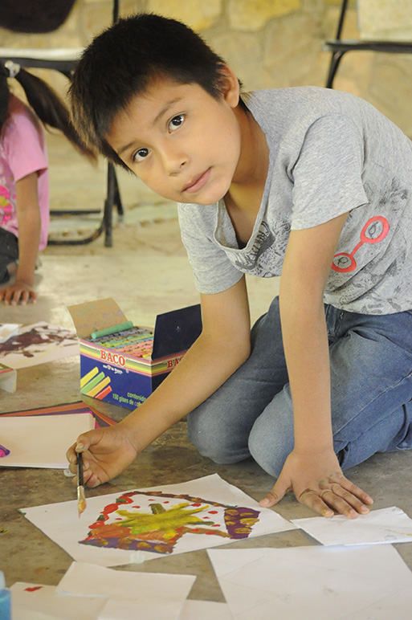
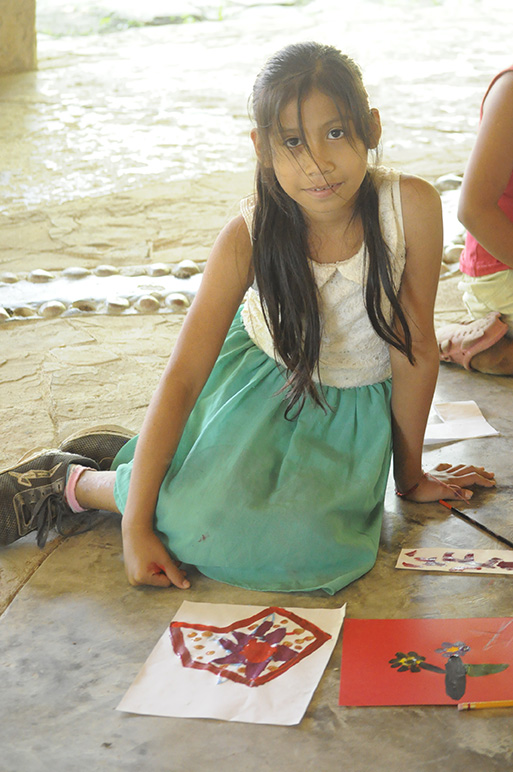
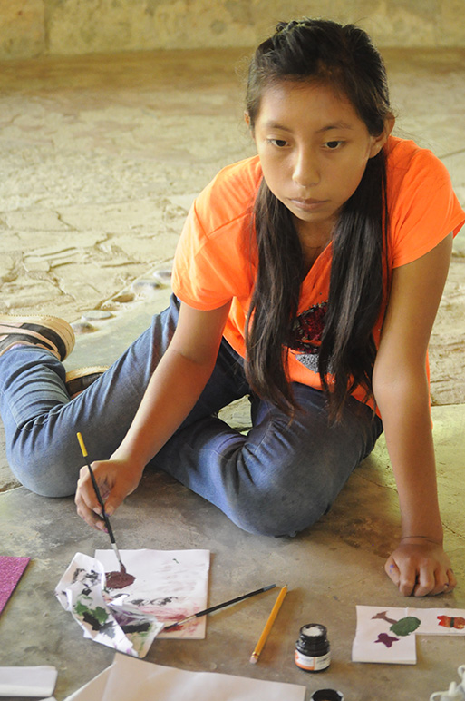

Septiembre diciembre de 2024 y Febrero 2025
Centro Ceremonial de Tamaletom, Mam Tsi’tsin Inik
En el Centro ceremonial Mam Tsi’tsin Inik, se consagra una y otra vez la vida tének por medio de rituales a través de los cuales se agradece a las deidades de todos los rumbos del universo. Para esto, se ofrendan alimentos, danzas, música y vestimentas en las que plasman figuras sagradas que representan todo este entorno sagrado. Los encuentros que hemos tenido en este lugar emblemático de la cultura tének, fueron realizados con el propósito de reflexionar colectivamente en torno a los desafíos, riesgos y acciones posibles para registrar y proteger las memorias patrimoniales ancestrales relacionadas con lossaberes textiles. En colectivo se discutió sobre la importancia de una mejor visibilización y difusión de los conocimientos que conservan las mujeres tének, sobre la indumentaria en su conjunto y de manera particular, el universo de significados de las figuras que se bordan en la prenda sagrada llamada dhayem, que usan sobre los hombros, y en el jal’kidh que es la bolsa. Una de las actividades consistió en que las abuelas Toñita, Florentina y Juliana explicaron la importancia del dhayem a las niñas y los niños, quienes hicieron dibujos de las figuras que han visto en los bordados de sus mamás y las ancestras. Explicaron que pintaron árboles, mariposas y pájaros porque les gustaban. Uno de ellos dijo que la estrella es como los signos de un país. Alguien preguntó: “¿en qué país has visto estrellas?” Israel respondió: -En el cielo. De esta actividad de transmisión de saberes entre abuelas, niñas y niños, derivó la creación de un cuento bilingüe para iluminar titulado Mi dhayem y el árbol florido, dedicado a las infancias tének. En esta narración se explica la importancia que tiene la tradición del bordado y en porque el dhayem, o dhayemlaab es considerada una prenda sagrada. Colaboraron también profesoras, profesores y alumnas de la Universidad Intercultural de San Luis Potosí (Campus Tancanhuitz), con la idea de tener una convivencia directa con quienes integran el Centro Ceremonial, que se encuentra a poca distancia del Campus. Aun la cercanía, la juventud tének del municipio a veces desconoce la existencia de un Centro donde se mantienen vigentes algunas prácticas ancestrales. Además de que participaron activamente en la investigación colaborativa y el intercambio de los saberes que fueron expresados, las estudiantes y los profesores y las profesoras, realizaron un importante registro en videos, fotos y audios. Con estos materiales es que realizaron un micrositio hospedado en la página web de la UICSLP, con la idea de difundir estas formas del patrimonio cultural tének de la Huasteca potosina.
íts’ septiembre-diciembre ti tamub 2024-febrero 2025
Jolataláb abal an k’aknaxtaláb ti Aletóm, Mám Ts’itsin Inik
Ti al an jolataláb abal an k’aknaxtaláb Mám Ts’itsin Inik, ets’ey k’ak’nab in ejatalabil an ténekchik kom in t’ajalchik an k’ak’nadh t’ipláb abal kin biyna an k’ak’naxtaláb tin tse’lom kublabil a k’aylál. Jaxtamits in ts’akchiyal an k’apnélchik, an bixnelchik, an k’aniláb ani al toltom ju’táj tin chukyalchik pilchik in witsíl xi k’ak’nadh ani in tejwa’medhal patal a xi in kwa’alchik ti al in k’ak’nadh tonidh. An tamkuntalábchik xi i t’ajamal ti axe’ xi k’ak’nadh jolataláb in k’ál an tének, t’ajan abal ki junkudh tsalpay janey k’wajat ti wat’el, an k’ak’adhtaláb xi wat’el ani an t’ojláb xi i wit’al ki t’aja’ abal ki dhaya’ ani ki k’aniy an biyal t’ajbiláb k’al an chukláb. Junax in tsalpaychik abal in yejenchal ka tejwa’medhá ani ka buk’lá patal an t’ojláb xi in aynalej kin t’aja’chik an mimláb ténekchik, k’al in kwentaj an toltom, patal a xi in chukyalchik ti al an dhayemláb, xi in eyenchalchik ebál in punuk’, ani ti al an talega xi pél an balixtaláb. Jún i t’ojláb xi t’ajan pél tam ti a ach Tonita, a Florentina ani a Juliana in t’ilchichik an ts’ik’áchik ani an kwitólchik jale’ ti lej exbadh an dhayemláb, an tsakamchik in mukuychik patal in witsil xi in tsu’tamalakchik tin chukláb in nanachik ani an biyalabchik. In uluwchik abal in mukuy an te’chik, an lémchik ani an ts’itsinchik kom in kulbetnalakchik. Jún in uluw abal a ot pél jant’odh in ts’o’omil jún pulik bichow. Jún i tsakam xi k’wajatak tana’ in konoy: “¿ju’táj ta tsu’umal an ts’itsin? a Israel tok’tsin: - ti al a éb. K’al axe’ xi t’ojláb ju’táj ti an achlabchik in wat’banchi an exobintaláb an ts’ikáchik ani an kwitólchik, kalej jún i t’iláb abal ka mukuyat xi in bij u dhayém ani an wajudh wits, ts’ejkadh abal an tének it yejélomchik. Ti al axe’ xi t’iláb tejwa’medhab abal exbadh an biyal t’ajbiláb k’al an chukláb ani jayétsej jale’ ti an dhayemláb pél jún i k’ak’nadh toltom abal an mimlábchik. T’ojonchik jayej an uxum ani inik exóbchixchik ani uxum exóbalchik ti Pulik Atáj Exobintaláb xi exladh ti láb ti Intercultural (in pejmach xi k’wajat ti k’anwits), abal ka t’ilmátschik k’al an atiklábchik xi k’wajat tin Jolatalabil abal an k’ak’naxtaláb, xi k’wajat utat ti Pulik Atáj Exobintaláb. Utatits ti k’wajat ani wa’ats an ts’ik’áchik ani kwitólchik xi yab in exlálchik abal wa’ats utat jún i jolataláb abal an k’ak’naxtaláb ju’táj ti aynab ka t’ajan an biyal t’ajbiláb. Jayétsej t’ojonchik ani in biyna in tsalápil tam ti patal t’ilmátschik, an exóbalchik ani an uxum ani inik exóbchixchik, in t’ajachik an t’ojláb abal kin dhaya’ an waleklábchik ani kin dhaya’ an káw ti al an pat’ál dhayom káw. K’al patal axe’ xi káw ani walekláb xi kaldhá t’ajan an micrositio xi ne’ets ka k’wajiy ts’at’at tin jolatalabil an UICSLP, abal ki buk’uw patal axe’ xi biyal t’ajbiláb in k’ál an tének tin pejach tsabálil ti al an Tampots’ots’.
Septiembre-diciembre de 2024-febrero 2025
Centro Ceremonial de Tamaletom, Mam Tsi’tsin Inik
Ipan nopa ilwikakiwili Mam Tsi’tsin Inik, kiteochiwa sempa wan sempa tlen inin nemilis koxtekatl ika tlen tijtlaskamatiliya nopa teotsitsij tlen kampaweli ipan tlaltipaktli. Ika ni, tlen temakaj tlakuali, tlatsotsonali, wika tlatsotsonali wan yoyomitl ipan tlen kiixnestiya tlaixkopinkayomej tlen tlaipanitakayotl tlenochi ni tlali. Nopa tlanechikoli tlen tijpixke ipan ni kakiwili tlen tlawel ipati tlen nopa koxteka tlalnamikili mochijke ika nopa tlayejyekoli tlen sansejko timonejnewilisej tlen nopa kuesoli, mawililoj wan tlen welis tijchiwase amatokaxtlajkuiloli wan sekimanawis inin tlalnamikilis to tojtatawa ika tlaixmatilistli tlen textiles. Ika sentik tlen mokamanalwijke tlen kipiya miak ipati tlen kuali mak nesi wan tlamoyawalistli tlen nopa tlaixmatilistli tlen kipixtokej koxtekaj siwamej, tlenochi yoyomitl, wan ininseli, nochi tlaltejpaktli tlen kijtosneki nopa tlaixkopinalmej tlen moitsomaj ipan nopa yoyomitl tlen tlaipanitakayotl tlen motokaxtiya dhayem, tlen kitekiwiya ipan inin ajkol, wan ipan nopa jal’kidh tlen nopa talekaj. Ni se tekitl tlen kichijke nopa inin weyinana Toñita, Florentina wan Juliana tlen kinkamanalwi siwapilmej wan okichpilmej tlen kipiya miak ipatikaj nopa dhayem, tlen kichijchijke tlaixkopinalmej tlen nopa tlaixkopinkayomej tlen kiitstokej ipan tlajtsomali tlen inin nanaj wan inin nanawa. Tlen kinkamalwijke tlen kiixkopinkej kuawitl, papalomej wan totomej pampa kinpaktiyaya. Tlen se ininjuanti kiijto ipan nopa Citlali eltok tlaneskayotl tlen se tlali. Se akinejki tlatsintokak: “¿Ipan tlakej tlaltejpaktli tikitstokej sitlalimej? “Israel kinankili: ipan ilwikajtli. Has aquí voy revisado Ika ni tekitl tlen weyinanamej tepanoltiliya tlaixmatilistli, siwapilmej wan okichpilmej, kichijki mak mochijchiwa se tlatempowalistli ika ome tlajtoli tlen tlawilistli tlen itokax no dhayem wan nopa kuawitl tlen xochiyowa, tlen temakaj ipan koxtekaj konemej. Ni tlatempowalistli tlen kiixtoma tlawel ipati nopa tlamachtili tlen tlachijchiwali wan kenke nopa dhayem, o dhayemlaab tlen kiitaj kej se yoyomitl tlen tlaipanitakayotl. Nojkia Tlapalewijke siwa tlamachtiyani wan tlaka tlamachtiyani wan siwa momachtiyani tlen weyi kaltlamachtilistli Universidad Intercultural de San Luis Potosi (Campus Tancanhuitz), nojkia tlapalewijke siwa momachtiyani tlen kipiyase se tlanejnewili xitlawak ininwaya katli tlatewantiya ipan nopa centro ceremonial, tlen eltok ipan se ojtli tlen amo wejka tlen tokaltlamachtilis. Nojkia nechka, telpokaj koxtekamej tlen ni nepanteyowali kemantika masewalmej axkimati tlaj onkaj se kakiwili kampa se keski tlamantli tlen wejkakiya kichiwayaya totatawan. Nojkia tlen tlapalewijke ipan nopa tlatemolistli tlen sansejko kichiwa wan tlajtolpatlalistli tlen nopa tlaixmatilistli tlen kinextijke, momachtiyani wan tlaka wan siwa tlamachtiyani, kichijke se teposmawisoli tlen tlawel ipati, tlaixkopinkayomej wan teposkakilistli. Ika ni tlamantli kichijchikej se kakiwili tlen eltok ipan nopa ikakiwilis tepostlanextilistli tlen UICSLP, ika ni tlanejnewili momoyawas ni tlamantli tlen koxtekaj tlalnamikilyol tlen totatawan tlen kuextekapan tlali.